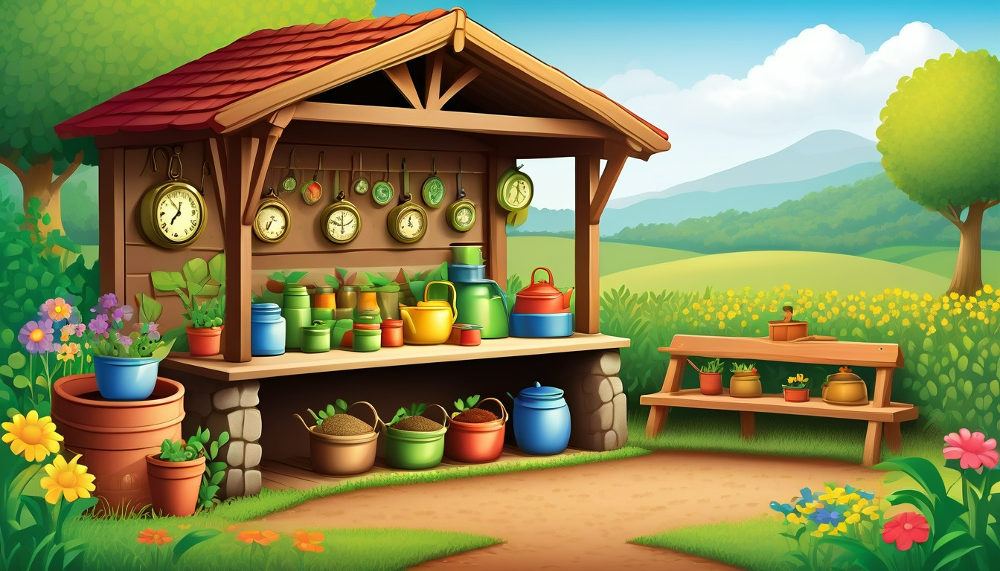

Sixteen pocket folder cards help writers connect a want, small snag, first try, rethink, finish note, and broad pocket label.
Audience: Families, homeschool groups, tutors, and adult-led writing tables for writers ages 7-11.
Format: 16 printable pocket folder story goal-path cards plus adult guide tools, goal-path routines, take-home goal slips, and optional adult prompts
Family-safe printable writing pages for adult-led, offline goal path practice.
$87
Included
16 printable pocket folder goal path cards
Adult setup guide
Fictional goal-path safety notes
Character want prompts
Small snag prompts
First try prompts
Rethink prompts
Six adult-led goal-path routines
Ten take-home goal slips
Printable PDF and ZIP artifact
Adult guide
Goal path coaching
Pocket Folder Goal Path Adult Guide
Set out one pocket folder, blank pages, pencils, and a goal path card before the adult-led start: ____________________.
Choose one made-up world and remind the writer that the want, snag, first try, rethink, finish note, and pocket label all stay invented: ____________________.
Move through the goal path in order so the paper page has one clear want before any snag appears: ____________________.
Keep the adult in charge of the folder while the writer writes or dictates short paper lines: ____________________.
Use pretend characters, broad places, and invented actions only; skip real names, real places, and personal facts: ____________________.
Close by reading the finish note and adding a pocket label for a later adult-led paper pass: ____________________.
Use one pocket folder goal path card at a time. Keep every choice broad, invented, paper-only, and guided by an adult.
World menu
Sixteen goal path card worlds
Pick a world image, then connect one fictional want, snag, first try, rethink, finish note, and pocket label.
Ages 7-9
Acorn Avenue Errand Office
Ages 7-9
Pocket Park Notice Board
Ages 7-8
Mitten Market Lost Ticket
Ages 7-9
Penny Path Compass Shop
Ages 7-9
Rain Boot Route Rangers
Ages 8-10
Greenhouse Gear Garden
Ages 8-10
Moss Message Observatory
Ages 8-10
Rain Gauge Railway
Ages 8-10
Pond Bridge Blueprint Club

Ages 8-10
Compost Clock Workshop
Ages 10-11
Chapter Gate Greenhouse
Ages 10-11
Binding Day Boardwalk
Ages 10-11
Blue Pencil Observatory
Ages 10-11
Index Card Theater Club
Ages 10-11
Compass Craft Academy
Ages 10-11
Almost Invention Workshop
Goal path routines
Choose the pocket folder routine
short first-page setup
Want Pocket Start
Pocket folder, blank page, pencil, and want card.
The adult opens the pocket folder and points to the want blank: ____________________.
The writer names one pretend character want for the page: ____________________.
The adult asks what makes that want clear on paper: ____________________.
The writer writes or dictates one want line on the blank page: ____________________.
The goal path starts with this pretend want: ____________________.
one-page snag setup
Snag Slip Add-On
Pocket folder, current page, pencil, and snag slip.
The adult rereads the want line from the paper page: ____________________.
The writer invents one small snag that gets in the character's way: ____________________.
The adult asks how the snag changes the next sentence: ____________________.
The writer writes one snag line under the want: ____________________.
The snag gives the want this paper problem: ____________________.
first action pass
First Try Page
Pocket folder, goal path card, blank page, and pencil.
The adult points from the snag to the first try blank: ____________________.
The writer chooses one first try the character can make: ____________________.
The adult asks what the first try looks like in one paper line: ____________________.
The writer writes the first try and tucks the page beside the snag slip: ____________________.
The first try moves the goal path with: ____________________.
gentle change pass
Rethink Fold-Back
Pocket folder, first try page, rethink strip, and pencil.
The adult folds back the first try page and asks what did not quite work: ____________________.
The writer names one calm rethink for the pretend character: ____________________.
The adult asks what the character will try in a new way: ____________________.
The writer writes one rethink line on the strip: ____________________.
The rethink changes the goal path by: ____________________.
paper close pass
Finish Note Tuck-In
Pocket folder, finish note slip, page stack, and pencil.
The adult lays the want, snag, first try, and rethink pages in order: ____________________.
The writer chooses what the pretend character understands by the end: ____________________.
The adult asks for one finish note that stays about the made-up goal path: ____________________.
The writer writes the finish note and tucks it into the pocket folder: ____________________.
The finish note closes the goal path with: ____________________.
folder label wrap
Pocket Label Sort
Pocket folder, label slip, pencil, and finished paper stack.
The adult points to the folded goal path pages in the pocket folder: ____________________.
The writer chooses a broad pocket label for the made-up goal path: ____________________.
The adult asks which part the label should help find later: ____________________.
The writer writes the pocket label and places it on the folder: ____________________.
The pocket label names this goal path as: ____________________.
Take-home goal slips
Try one goal path later
Take-home goal slip
Goal slip 1
Adult: open the pocket folder and ask for one pretend character want: ____________________.
Take-home goal slip
Goal slip 2
Writer: the want on my goal path is: ____________________.
Take-home goal slip
Goal slip 3
Adult: ask what small snag gets in the way of that want: ____________________.
Take-home goal slip
Goal slip 4
Writer: the snag on the paper page is: ____________________.
Take-home goal slip
Goal slip 5
Adult: point to the first try blank and ask what the character does next: ____________________.
Take-home goal slip
Goal slip 6
Writer: the first try should be: ____________________.
Take-home goal slip
Goal slip 7
Adult: ask what the character can rethink after the first try: ____________________.
Take-home goal slip
Goal slip 8
Writer: the rethink line is: ____________________.
Take-home goal slip
Goal slip 9
Adult: ask for a finish note that closes the pretend goal path: ____________________.
Take-home goal slip
Goal slip 10
Writer: the pocket label for this paper stack is: ____________________.
Optional adult prompts
Optional adult-led paper prompt: the pretend character wants ____________________.
Optional adult-led paper prompt: the small snag is ____________________.
Optional adult-led paper prompt: the first try looks like ____________________.
Optional adult-led paper prompt: the rethink changes the plan by ____________________.
Optional adult-led paper prompt: the finish note should say ____________________.
Optional adult-led paper prompt: the pocket label can name ____________________.
Optional adult-led paper prompt: the next paper pass could start with ____________________.
Optional adult-led paper prompt: the goal path closes when ____________________.
Goal Path Card 1 | Ages 7-9 | build a pretend errand-office goal path from want to snag, first try, rethink, finish note, and pocket label
Acorn Avenue Errand Office Story Goal Path Card
Acorn Avenue Errand Office
Adult setup: Adult: place one pocket folder, blank page, pencil, and pretend acorn-errand goal path card beside the writer: ____________________.
Writer: keep the Acorn Avenue errand fully made-up while each paper note moves the helper closer to the goal: ____________________.
Want
Want: write what the tiny errand helper wants to finish before the folder pocket closes: ____________________.
Snag
Snag: add one small paper mix-up, missing note, or turned sign that slows the errand goal path: ____________________.
First try
First try: write the first calm idea the helper tries at the errand office: ____________________.
Rethink
Rethink: change one part of the plan after the snag points to a better paper clue: ____________________.
Finish note
Finish note: write the short note that shows how the helper reaches the made-up errand goal: ____________________.
Pocket label
Pocket label: write a broad folder label for this Acorn Avenue want and goal path: ____________________.
Quiet option: fill only the want, snag, and pocket label blanks before adding the first try later: ____________________. Take-home line: restart this paper goal path later with one pretend acorn errand want: ____________________.
Goal Path Card 2 | Ages 7-9 | plan a pretend notice-board goal path with a clear want, snag, first try, rethink, finish note, and pocket label
Pocket Park Notice Board Story Goal Path Card
Pocket Park Notice Board
Adult setup: Adult: set out a pocket folder, blank page, pencil, and pretend notice-board goal path card: ____________________.
Writer: invent a park helper, a paper notice, and a goal path that stays on the page: ____________________.
Want
Want: write what the park helper wants the notice board to help solve in the made-up scene: ____________________.
Snag
Snag: add one small snag, such as a folded corner, swapped pin, or confusing paper mark: ____________________.
First try
First try: write the helper's first try for making the notice board goal clearer: ____________________.
Rethink
Rethink: write how the helper changes the paper plan after reading the snag again: ____________________.
Finish note
Finish note: write the calm line that shows the notice-board goal path has reached a useful ending: ____________________.
Pocket label
Pocket label: write a broad folder label for this Pocket Park want and goal path: ____________________.
Quiet option: write only the want and finish note, then let the adult hold the folder for later: ____________________. Take-home line: continue this paper goal path later with one pretend park notice want: ____________________.
Goal Path Card 3 | Ages 7-8 | move a pretend lost-ticket want through a small snag, first try, rethink, finish note, and pocket label
Mitten Market Lost Ticket Story Goal Path Card
Mitten Market Lost Ticket
Adult setup: Adult: place a pocket folder, blank page, pencil, and pretend mitten-ticket goal path card on the table: ____________________.
Writer: make the ticket, mitten stalls, and helper completely pretend while the goal path stays paper-only: ____________________.
Want
Want: write what the mitten helper wants to find, fix, or return in the lost-ticket scene: ____________________.
Snag
Snag: add one small snag, like two similar ticket shapes or a tucked-away paper slip: ____________________.
First try
First try: write the first try the helper makes to sort out the ticket mix-up: ____________________.
Rethink
Rethink: write what the helper notices next and how the plan changes: ____________________.
Finish note
Finish note: write the short made-up note that shows the ticket goal is settled: ____________________.
Pocket label
Pocket label: write a broad folder label for this Mitten Market want and goal path: ____________________.
Quiet option: draw a tiny paper ticket mark, then fill the want and pocket label blanks: ____________________. Take-home line: start another paper goal path later with one pretend mitten-ticket want: ____________________.
Goal Path Card 4 | Ages 7-9 | turn a pretend compass-shop want into a step-by-step goal path with snag, first try, rethink, finish note, and pocket label
Penny Path Compass Shop Story Goal Path Card
Penny Path Compass Shop
Adult setup: Adult: set a pocket folder, blank page, pencil, and pretend compass-shop goal path card where the writer can reach them: ____________________.
Writer: keep the compass, path marks, and shop helper invented while the goal path grows on paper: ____________________.
Want
Want: write what the shop helper wants the pretend compass to help choose or fix: ____________________.
Snag
Snag: add one small snag, such as a compass arrow that points to two paper marks: ____________________.
First try
First try: write the helper's first try for following the compass clue on the page: ____________________.
Rethink
Rethink: write how the helper changes the plan after the compass mark makes a new idea: ____________________.
Finish note
Finish note: write the calm line that shows the compass-shop goal path is complete: ____________________.
Pocket label
Pocket label: write a broad folder label for this Penny Path want and goal path: ____________________.
Quiet option: fill the want, first try, and pocket label blanks, then pause the rest: ____________________. Take-home line: continue this paper goal path later with one pretend compass-shop want: ____________________.
Goal Path Card 5 | Ages 7-9 | shape a pretend ranger want into a paper goal path with snag, first try, rethink, finish note, and pocket label
Rain Boot Route Rangers Story Goal Path Card
Rain Boot Route Rangers
Adult setup: Adult: place a pocket folder, blank page, pencil, and pretend rain-boot ranger goal path card beside the paper: ____________________.
Writer: invent paper boot marks and ranger notes while keeping the whole goal path pretend: ____________________.
Want
Want: write what the rain-boot ranger wants to arrange, check, or guide in the made-up scene: ____________________.
Snag
Snag: add one small snag, like a smudged boot mark, a folded map scrap, or a sign that needs clearer wording: ____________________.
First try
First try: write the ranger's first try for moving the goal path forward on paper: ____________________.
Rethink
Rethink: write how the ranger changes the paper plan after the snag becomes clearer: ____________________.
Finish note
Finish note: write the short note that shows the ranger's goal path reaches a calm finish: ____________________.
Pocket label
Pocket label: write a broad folder label for this Rain Boot Route Rangers want and goal path: ____________________.
Quiet option: write only the want, snag, and finish note before adding the rethink later: ____________________. Take-home line: restart this paper goal path later with one pretend rain-boot ranger want: ____________________.
Goal Path Card 6 | Ages 8-10 | connect a pretend greenhouse-gear want to a snag, first try, rethink, finish note, and pocket label
Greenhouse Gear Garden Story Goal Path Card
Greenhouse Gear Garden
Adult setup: Adult: set out a pocket folder, blank page, pencil, and pretend greenhouse-gear goal path card: ____________________.
Writer: keep the gear, garden tags, and helper made-up while each paper note moves toward the goal: ____________________.
Want
Want: write what the greenhouse helper wants the pretend gear to do for the garden plan: ____________________.
Snag
Snag: add one small snag, such as a gear tag that turns the wrong way or a label that needs a clearer note: ____________________.
First try
First try: write the helper's first try for using the gear to move the goal path ahead: ____________________.
Rethink
Rethink: write how the helper changes the plan after checking the gear tag again: ____________________.
Finish note
Finish note: write the short note that shows the greenhouse-gear goal path has a calm finish: ____________________.
Pocket label
Pocket label: write a broad folder label for this Greenhouse Gear Garden want and goal path: ____________________.
Quiet option: fill the want and rethink blanks first, then choose a pocket label: ____________________. Take-home line: continue this paper goal path later with one pretend greenhouse-gear want: ____________________.
Goal Path Card 7 | Ages 8-10 | connect a fictional want, snag, first try, rethink, finish note, and pocket label for one moss message observatory page
Moss Message Observatory Story Goal Path Card
Moss Message Observatory
Adult setup: Adult: set out one pocket folder, a blank page, a pencil, and a pocket label slip before the goal path begins: ____________________.
Writer: invent an observatory helper who reads pretend moss messages and keeps every goal path note on paper: ____________________.
Want
Want: write what the observatory helper wants to learn from the pretend moss message today: ____________________.
Snag
Snag: name one small paper snag that makes the moss message hard to understand at first: ____________________.
First try
First try: write the first calm paper plan the helper tries to follow the moss message: ____________________.
Rethink
Rethink: choose what the helper notices after the snag and how the paper plan changes: ____________________.
Finish note
Finish note: write the final note that shows what the helper understands now: ____________________.
Pocket label
Pocket label: write the short pretend label for this moss message goal path: ____________________.
Quiet option: adult points to the want blank, and the writer fills only the finish note line: ____________________. Take-home line: tuck the moss message page into the pocket folder with one goal path note to continue later: ____________________.
Goal Path Card 8 | Ages 8-10 | build a fictional railway goal path with a want, snag, first try, rethink, finish note, and pocket label
Rain Gauge Railway Story Goal Path Card
Rain Gauge Railway
Adult setup: Adult: place one pocket folder beside a blank rail note, a pencil, and a pocket label strip for the goal path: ____________________.
Writer: make up a railway helper, a pretend gauge mark, and a paper-only goal path with no real trip details: ____________________.
Want
Want: write what the railway helper wants the pretend gauge mark to help with: ____________________.
Snag
Snag: name the small paper snag that makes the gauge mark point to the wrong rail note at first: ____________________.
First try
First try: write the first paper step the helper tries to sort the gauge mark: ____________________.
Rethink
Rethink: choose the new rail note the helper checks after the first try does not work: ____________________.
Finish note
Finish note: write how the helper connects the gauge mark to a clearer paper ending: ____________________.
Pocket label
Pocket label: write the short pretend label for this railway goal path: ____________________.
Quiet option: adult names the gauge mark, and the writer fills only the rethink blank: ____________________. Take-home line: keep the rail note in the pocket folder with one want, snag, or first try line to finish later: ____________________.
Goal Path Card 9 | Ages 8-10 | draft a fictional blueprint-club goal path using want, snag, first try, rethink, finish note, and pocket label
Pond Bridge Blueprint Club Story Goal Path Card
Pond Bridge Blueprint Club
Adult setup: Adult: set out one pocket folder, a blank blueprint page, a pencil, and a pocket label slip for the goal path: ____________________.
Writer: invent a blueprint club helper and plan a pretend pond bridge idea only on paper: ____________________.
Want
Want: write what the blueprint helper wants the pretend pond bridge to help connect: ____________________.
Snag
Snag: name one small blueprint snag, such as a line that points to the wrong page corner: ____________________.
First try
First try: write the first paper plan the helper sketches to fix the bridge idea: ____________________.
Rethink
Rethink: choose what the helper notices on the blueprint and how the plan changes: ____________________.
Finish note
Finish note: write the final paper note that explains the new bridge idea: ____________________.
Pocket label
Pocket label: write the short pretend label for this blueprint club goal path: ____________________.
Quiet option: adult circles the snag blank, and the writer fills only one first try phrase: ____________________. Take-home line: slide the blueprint page into the pocket folder with the pocket label ready for another paper plan: ____________________.
Goal Path Card 10 | Ages 8-10 | shape a fictional workshop goal path through want, snag, first try, rethink, finish note, and pocket label
Compost Clock Workshop Story Goal Path Card
Compost Clock Workshop
Adult setup: Adult: open the pocket folder, add a blank workshop page, and place a pocket label strip beside the goal path card: ____________________.
Writer: invent a workshop helper with a pretend compost clock and keep the whole goal path on paper: ____________________.
Want
Want: write what the workshop helper wants the pretend compost clock to organize on the page: ____________________.
Snag
Snag: name one small paper snag that makes the compost clock marks confusing at first: ____________________.
First try
First try: write the first paper fix the helper tries for the clock marks: ____________________.
Rethink
Rethink: choose what the helper changes after checking the snag again: ____________________.
Finish note
Finish note: write the final note that shows how the helper understands the clock marks now: ____________________.
Pocket label
Pocket label: write the short pretend label for this workshop goal path: ____________________.
Quiet option: adult reads the want line, and the writer fills only the pocket label blank: ____________________. Take-home line: place the compost clock page in the pocket folder and add one rethink note later: ____________________.
Goal Path Card 11 | Ages 10-11 | plan a longer fictional greenhouse goal path with want, snag, first try, rethink, finish note, and pocket label
Chapter Gate Greenhouse Story Goal Path Card
Chapter Gate Greenhouse
Adult setup: Adult: set one pocket folder, a blank greenhouse page, a pencil, and a pocket label slip beside the goal path prompt: ____________________.
Writer: invent a greenhouse gate helper and write a paper-only goal path with made-up details: ____________________.
Want
Want: write what the greenhouse gate helper wants to open, sort, or understand on the pretend page: ____________________.
Snag
Snag: name one small gate snag that keeps the helper from moving the goal path forward at first: ____________________.
First try
First try: write the first thoughtful paper plan the helper tries at the chapter gate greenhouse: ____________________.
Rethink
Rethink: choose what the helper learns from the snag and what changes in the next paper plan: ____________________.
Finish note
Finish note: write the final note that shows how the helper reached a calm stopping point: ____________________.
Pocket label
Pocket label: write the short pretend label for this greenhouse goal path: ____________________.
Quiet option: adult points to the first try blank, and the writer fills only the rethink line: ____________________. Take-home line: tuck the greenhouse page into the pocket folder with the finish note facing up for later use: ____________________.
Goal Path Card 12 | Ages 10-11 | connect a fictional boardwalk character want to one snag, first try, rethink, finish note, and pocket label
Binding Day Boardwalk Story Goal Path Card
Binding Day Boardwalk
Adult setup: Adult: set out one pocket folder, blank page, pencil, and this card beside a pretend boardwalk page stack: ____________________.
Writer: build a goal path on paper for an invented boardwalk helper and keep every detail made up with adult guidance: ____________________.
Want
Want: choose what the invented boardwalk helper wants to fix, find, or arrange by the last page: ____________________.
Snag
Snag: name the small boardwalk paper problem that slows the want without danger or blame: ____________________.
First try
First try: write the first calm action the helper tries with a page stack, ribbon cart, or folder note: ____________________.
Rethink
Rethink: show what the helper notices after the first try and what changes on the goal path: ____________________.
Finish note
Finish note: write the ending note that shows how the want changed or was handled: ____________________.
Pocket label
Pocket label: write the broad pretend pocket label for this boardwalk goal path: ____________________.
Quiet option: fill only the want, snag, and pocket label before adding more: ____________________. Take-home line: tuck the page in the pocket folder and add one new rethink later: ____________________.
Goal Path Card 13 | Ages 10-11 | trace a fictional observatory character want through a snag, first try, rethink, finish note, and pocket label
Blue Pencil Observatory Story Goal Path Card
Blue Pencil Observatory
Adult setup: Adult: place this card, a pocket folder, blank paper, and pencil beside a pretend blue-pencil sky chart: ____________________.
Writer: plan the goal path on paper for an invented observatory helper and keep the sky-chart details pretend: ____________________.
Want
Want: choose what the invented observatory helper wants to mark, rename, or sort on the blue-pencil chart: ____________________.
Snag
Snag: write the small pencil-line problem that blocks the want for one calm story beat: ____________________.
First try
First try: describe the first paper action the helper tries with a pencil mark, chart corner, or folder tab: ____________________.
Rethink
Rethink: show the new clue the helper notices after the first try changes the goal path: ____________________.
Finish note
Finish note: write how the helper leaves the chart clearer at the end of the goal path: ____________________.
Pocket label
Pocket label: write the broad pretend pocket label for this observatory goal path: ____________________.
Quiet option: write one want sentence, one snag phrase, and one pocket label word first: ____________________. Take-home line: fold the page into the pocket folder and add one invented chart rethink later: ____________________.
Goal Path Card 14 | Ages 10-11 | shape a fictional theater-club want into a snag, first try, rethink, finish note, and pocket label
Index Card Theater Club Story Goal Path Card
Index Card Theater Club
Adult setup: Adult: set out a pocket folder, blank page, pencil, and this card beside a pretend stack of theater-club index cards: ____________________.
Writer: use paper only to plan a goal path for an invented card keeper inside the pretend theater club: ____________________.
Want
Want: choose what the invented card keeper wants the theater club to remember on its index cards: ____________________.
Snag
Snag: name the small mix-up that makes two pretend index cards point in different directions: ____________________.
First try
First try: write the first careful card-sorting action the keeper tries to help the want: ____________________.
Rethink
Rethink: show what the keeper notices when the first try changes which card matters most: ____________________.
Finish note
Finish note: write the final paper note that shows the card keeper found a workable ending: ____________________.
Pocket label
Pocket label: write the broad pretend pocket label for this theater-club goal path: ____________________.
Quiet option: fill the want blank, the snag blank, and one pocket label word before adding the first try: ____________________. Take-home line: slide the page into the pocket folder and add one new card rethink later: ____________________.
Goal Path Card 15 | Ages 10-11 | carry a fictional compass-craft want through a snag, first try, rethink, finish note, and pocket label
Compass Craft Academy Story Goal Path Card
Compass Craft Academy
Adult setup: Adult: place one pocket folder, blank page, pencil, and this card beside a pretend compass craft table: ____________________.
Writer: draft a paper goal path for an invented compass maker using only made-up craft-table details: ____________________.
Want
Want: choose what the invented compass maker wants to guide through a pretend paper maze: ____________________.
Snag
Snag: write the small compass-mark problem that makes the goal path bend in an unexpected way: ____________________.
First try
First try: describe the first paper action the compass maker tries with an arrow, tab, or folded map: ____________________.
Rethink
Rethink: show what the compass maker changes after seeing why the first try was not enough: ____________________.
Finish note
Finish note: write the ending note that explains where the goal path finally points: ____________________.
Pocket label
Pocket label: write the broad pretend pocket label for this compass-craft goal path: ____________________.
Quiet option: write only the want, one snag phrase, and one compass pocket label for now: ____________________. Take-home line: keep the page in the pocket folder and add one new arrow rethink later: ____________________.
Goal Path Card 16 | Ages 10-11 | turn a fictional almost-invention want into a snag, first try, rethink, finish note, and pocket label
Almost Invention Workshop Story Goal Path Card
Almost Invention Workshop
Adult setup: Adult: set out a pocket folder, blank paper, pencil, and this card beside a pretend almost-invention sketch: ____________________.
Writer: plan the paper goal path for an invented workshop helper and keep every invention detail gentle and pretend: ____________________.
Want
Want: choose what the invented workshop helper wants the almost-invention to do by the ending: ____________________.
Snag
Snag: name the small paper-tab or gear-label problem that keeps the want from working at first: ____________________.
First try
First try: write the first careful action the helper tries with a tab, label, sketch, or folded note: ____________________.
Rethink
Rethink: show what the helper notices after the first try and what new paper choice follows: ____________________.
Finish note
Finish note: write how the almost-invention ends up useful in a surprising pretend way: ____________________.
Pocket label
Pocket label: write the broad pretend pocket label for this workshop goal path: ____________________.
Quiet option: fill only the want line, snag line, and pocket label line before adding more: ____________________. Take-home line: tuck the page into the pocket folder and add one new workshop rethink later: ____________________.